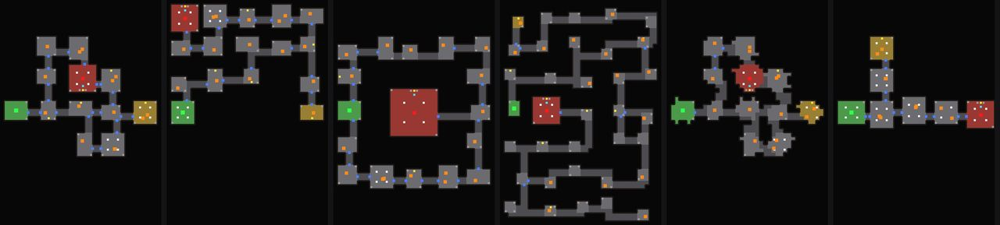

Expedition areas, waystone modifiers, Warp Tears and Wenna's weaving, Tide Bells, Loose Threads, the atlas and the season.
After the Sundered King falls, Gatewarden Ysolde opens the Lattice Gate. A waystone dropped in the world opens an expedition into one of the areas below. Higher tiers are harder and pay better; each waystone also rolls modifiers that make it more dangerous and more rewarding. Clearing expeditions earns atlas points for the atlas passives. Once the Loomwright is dealt with, about one expedition in five also holds a Warp Tear, once you have been down into the Undertow, about one in five a Tide Bell, and once you have been out to the Selvage, about one in five a Loose Thread. For timed runs of the five story dungeons, see Hourglass runs.
Each area is built in a shape of its own, named on its waystone: halls and chambers, a winding descent, a ring of rooms round an arena, a labyrinth, open caverns, or pillared halls. Caves and frost have stone kits of their own. Waystones can lay burning, chilled, shocked or desecrated ground in patches through an area, make slain monsters burst, raise slain rares again as spectres, or add a second boss. Modifiers that weaken players apply inside the expedition.

The six layouts from above: green is the way in, red the boss, gold the reward room.
Dirt along every wall's foot, thickest in the corners, with dust and damp; passages worn smooth down the middle; low mist over the floors; shafts of light through the roof in some rooms
Strewn about
Bones and skulls, urns and candles in their own wax along the walls and in the corners, among fallen stones; cobwebs across the corners and a worn runner down the boss hall
Dirt along every wall's foot, thickest in the corners, with moss and standing water; low mist over the floors; shafts of light through the roof in some rooms
Strewn about
Shells in kelp and urns along the walls and in the corners, among fallen stones
Dirt along every wall's foot, thickest in the corners, with dust and damp; passages worn smooth down the middle; low mist over the floors; shafts of light through the roof in some rooms
Strewn about
Bones and skulls, urns and candles in their own wax along the walls and in the corners, among fallen stones; cobwebs across the corners and a worn runner down the boss hall
Dirt along every wall's foot, thickest in the corners, with snow drifting deeper against the walls; low mist over the floors; shafts of light through the roof in some rooms
Strewn about
Ice and bones along the walls and in the corners, among fallen stones
Dirt along every wall's foot, thickest in the corners, with dust and damp; passages worn smooth down the middle; low mist over the floors; shafts of light through the roof in some rooms
Strewn about
Bones and skulls, urns and candles in their own wax along the walls and in the corners, among fallen stones; cobwebs across the corners and a worn runner down the boss hall
Once the Loomwright is dealt with (the end of The Hall of the Warp), the threads that run out through the Gate snag, and an expedition can hold a Warp Tear: about one in five, hung in the air of a room away from the entrance, the boss's room and any rift. It is a rent in the air, a lens of the dark beyond edged with ragged warp-light, with loose threads frayed from it to the floor and splinters of glass turning about it.
Touch the tear and it opens. A ring of the warp spreads over the floor, from 4 metres out to 15, and glass things come through inside it already hunting, stitched out of the air in threads of light. Packs of 2 to 4 come every 1.4 seconds, faster as the count climbs (down to every 0.7), with no more than 14 through at once. Some are magic or rare.
The tear stays open 16 seconds, and every creature unpicked buys back three quarters of a second, with never more than 24 seconds in hand, so a group that kills fast keeps it open a long time. A bar at the top right of the screen shows it while it is open: its time as a bar of warp-light that runs down and pulses red near the end, the count unpicked, and the count toward the Knot-Keeper.
At 45 kills The Knot-Keeper comes through in a column of light: a glass spider two and a half times the size of the others, with nine times a normal monster's life, that casts frost. It carries 10 to 16 Warp Thread and 2 rare items, and it stays to be fought when the tear closes.
When the time runs out the tear seals. Whatever still stands unravels back into it, apart from the Knot-Keeper, and 3 to 6 Warp Thread fall where it hung. Everyone within 60 metres is credited for the tear, their best count and any Knot-Keeper.
Warp Thread
Warp Tears: about one in three of the things that come through (32%), 10 to 16 from the Knot-Keeper and 3 to 6 where the tear hung when it closes
Wenna Coldspindle weaves Warp Thread into equipment once The Hall of the Warp is done, from the Weave tab of the crafting panel. Hold a piece and the tab lists the weavings that fit it, with their cost. One weaving to a piece: weaving again unpicks the old one and replaces it, and corrupted items will not take it. The woven property counts with the item's own and shows on it marked “(woven)”.
“Some of the threads run out through the Gate now. Where they snag out there, the warp tears. Bring me what you unpick and I'll weave it into you.”Wenna Coldspindle
Once you have finished The Undertow, in the fifth chapter, an expedition you open can hold a Tide Bell: about one in five, hung in a room away from the entrance and any rift or tear. It is a ship's bell gone green under the sea, hung from a frame of driftwood lashed with rope over a cairn of tide-worn rocks, with barnacles crusting the feet of its posts, kelp hanging from the beam and sea glass glowing among the stones. Ring it, and the sea comes in.
“Since the Undertow the warp goes out with every tide, and where it goes out past the Gate, the sea goes after it. Find the bell it rings down there. Then mind your feet.”Orla Penwarden
Chance
18% of expeditions; Spring Tides doubles it; certain on a Tidal waystone
The bell swings and tolls, and the sea comes in over every floor of the map. In 7 seconds it stands knee deep through every room and passage, holds at high water for 34 seconds, then turns and drains away over 8. The water is clear and dark, with the stones seen through it, bent by crossing ripples and lit from beneath by the warp's light moving over the floor, and a line of foam rings every wall, pillar and leg that stands up through it. Heroes wading are 12% slower, and so are monsters that walk; medusae and anything that flies drift over it. Every footstep splashes.
A bar at the top right follows the tide: the bell, what the sea is doing and the time left, a band of sea that fills and drains with the water, a pip for each sea chest (lit when opened) and the Bloom Mother's coming.
While the sea comes in and stands at high water, medusae drift in on it near the heroes, already hunting: packs of 2 to 4 every 2.6 seconds, 9 to 16 metres from one of you, with no more than 12 in at once. Some are magic or rare. When the tide turns no more come, and when it is out, whatever drifted in and still drifts goes out with it.
As the sea comes in, 4 to 6 sea chests surface across the map, one to a room and never at the entrance: iron-bound chests dark and wet from the sea, crusted with barnacles and wound with kelp, the light of the sea glass inside showing at the seam of the lid. Open one for gold, 1 to 3 magic or rare items, often Sea Glass and now and then a waystone. A chest counts for whoever opens it. Whatever is not opened when the sea has gone out sinks with it.
Eight seconds into high water, the Bloom Mother rises at the bell in a column of rose light: a medusa two and a half times the size of the others, pink and gold, with a brighter, wider light. She is always rare, stings from range, throws a nova and lashes, and she stays to be fought when the tide goes out. She carries 3 to 5 Sea Glass and 2 rare items, and everyone in the map is credited when she falls.
When the high water is spent the tide turns, and over 8 seconds it drains away. Then what drifted in goes out with it, all but the Bloom Mother, the chests not opened sink, and the tally is called: how many chests were opened of how many came in. Everyone in the map is credited with a tide seen in and out. Each bell rings once.
Sea Glass, the new currency, sets a tidemark in a waystone: its map holds a Tide Bell for certain, and two more sea chests come in on its tide. The mark stays through rerolls, and a waystone takes one.
However the Lattice was tied at the Selvage, the slack it took in runs back out past the Gate, and where it snags in the lands beyond, it knots. Once you have finished The Selvage, the end of the sixth chapter, an expedition you open can hold a Loose Thread: about one in five, a frayed end of glowing three-strand rope standing up out of the floor in a room a little way in from the entrance, with motes of light lifting off it. Use it to pull it.
“However it was tied at the Selvage, the slack had to go somewhere. It's running back out past the Gate now, and it snags. Find a loose end down there and pull it, and cut every knot before it draws tight again.”Wenna Coldspindle
Pull the end and the thread runs out through the halls, laid along the passages, to three to five knots tied in it, each in a room of its own at least 16 metres on from the last, never the entrance's or the boss's. From the pull you have 48 seconds before it draws tight, ten of them after a warning, and each knot cut buys 20 seconds back, up to 70 on the clock.
A bar at the top right follows it: the time left, a band of the thread's light that shortens as the time runs down, and a knot for each one tied, struck through as it is cut. Everyone within 120 metres of the end or a knot sees it.
Each knot is an overhand knot of three-strand rope with a soft orb of light in its heart. When a hero comes within 12 metres of one, the woven things are stitched out of it to hold it, three to five of them and already hunting. A knot cannot be cut while any of them stands within 9 metres of it: cut down what holds it, then use the knot. A cut knot leaves gold, sometimes magic items, and more often than not Hem Thread.
When the end comes free in a map of waystone tier 7 or higher, and otherwise at 35%, the last of the slack draws in and the Snarl rises from the last knot: a knot of rope 2.4 times the size of the ravellings', in a dark gold of its own. It is always rare. Slain, it leaves 4 to 7 Hem Thread and 2 rare items.
If the clock runs out first, the thread draws tight and is gone. Every knot not yet cut is drawn away along it, and whatever was holding those knots goes with it; what the cut knots gave stays. Everyone near the thread or its knots is credited with seeing a thread out, cut or drawn tight.
Hem Thread, the new currency, rerolls a rare item but hems its best property in place: the property whose tier needs the highest item level is kept, and every other one unravels and three to five new ones are woven in its place. It works only on rare items.
“The thread you cut from those knots is the Lattice's own hem. Run it through something you've made and it'll hold the best of it while the rest comes undone and is woven again.”Wenna Coldspindle